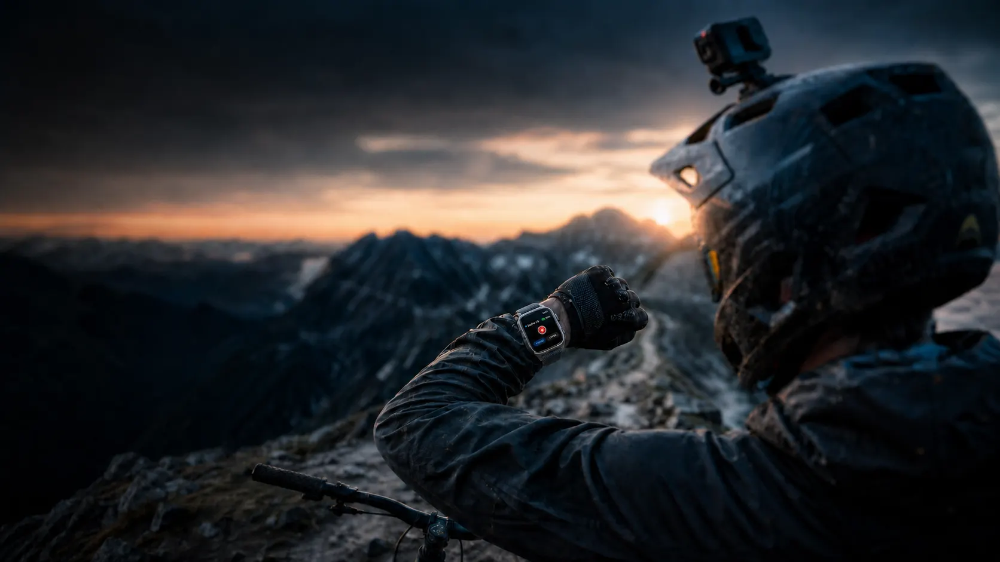
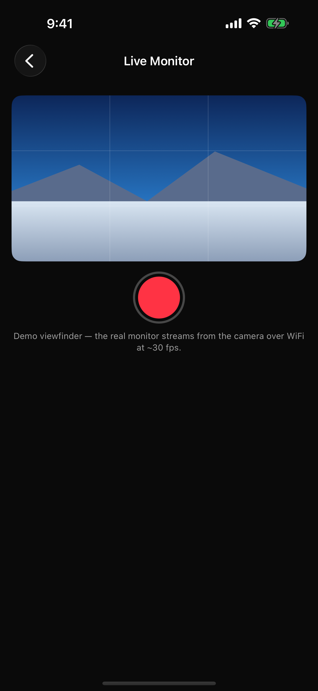
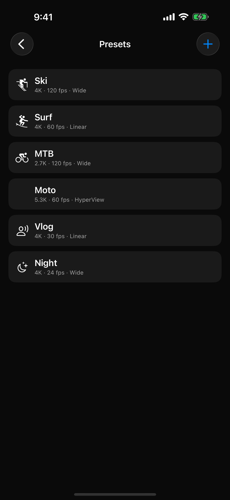
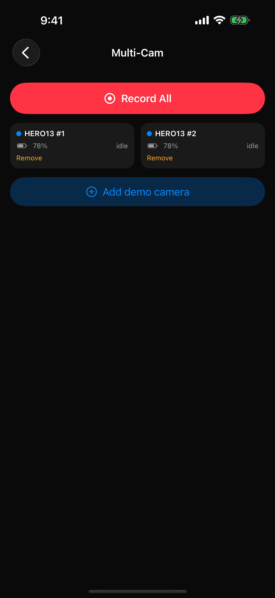

Record & stop
One tap, with haptic confirmation.
CONTROL WITHOUT REACHING
Control your GoPro directly from Apple Watch. No iPhone needed for core camera controls.
MISSION 1 Pro · HERO9 Black and later
Watch the demoONE SIMPLE FLOW
Check your camera, set up the shot, and start recording. Choose a step to take a closer look.


ON THE WRIST
One tap, with haptic confirmation.
Video, Slo-Mo, Photo, Lapse — from the wrist.
Battery, SD card, heat, GPS, recording time.
Camera state on your watch face.
Start rolling hands-free.
Every screen, no camera required.
ON THE IPHONE
Three ways to take more control with Overcrank Pro.

Live Monitor
Check the view from a mounted camera on your iPhone before you start recording.

Presets
Build your camera presets on iPhone and sync them straight to your wrist.

Multi-Cam
Start and stop your camera rig together from one place.
App screens shown in Demo Mode. Live Monitor uses your camera’s Wi-Fi connection.
YOUR CAMERA. YOUR WATCH.
Apple Watch talks directly to your GoPro over Bluetooth. Record, switch modes, and check camera status without your iPhone nearby.
MISSION 1 PRO
MISSION 1 Pro settings, verified on hardware. Choose your resolution, frame rate, exposure, and lens from Overcrank.
PRICING
| What’s included | Free$0 | Pro$9.99USD, once |
|---|---|---|
| Record & stop with haptic confirmation | Included | Included |
| Mode switching from the wrist | Included | Included |
| Live battery, SD, heat, and GPS status | Included | Included |
| Watch-face complications | Included | Included |
| Siri and Action button recording | Included | Included |
| Demo Mode — every screen, no camera | Included | Included |
| Deep settings control on Watch and iPhone | Not included | Included |
| Presets synced straight to the wrist | Not included | Included |
| Live Monitor and framing preview | Not included | Included |
| Media browser and downloads | Not included | Included |
| Multi-Cam rig control | Not included | Included |
Pro includes everything in Free. One purchase, family shareable, no subscription. US pricing shown; local App Store pricing may vary.
Built and hardware-tested for GoPro MISSION 1 Pro. HERO9 Black and later are built against GoPro’s published Open GoPro protocol but not yet tested on hardware; exact settings depend on camera and firmware.
Not for core Watch controls — Apple Watch talks directly to the camera over Bluetooth. iPhone adds Live Monitor, media tools, preset building, and Multi-Cam.
An iPhone on iOS 17 or later and an Apple Watch on watchOS 10 or later.
None. No accounts, no analytics, no servers. Camera traffic stays between your devices and the camera.
Questions or bugs? Email support@overcrank.ca.
Available now on the App Store
Pro for US $9.99, once. No subscription. No account.
MISSION 1 Pro · HERO9 Black and later · watchOS 10 · iOS 17